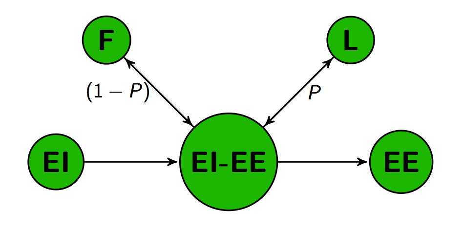
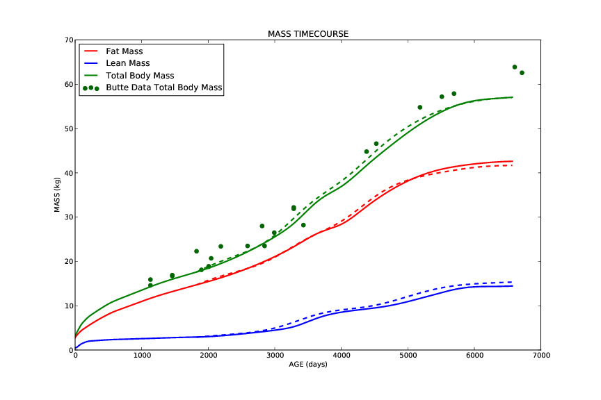

I spent the last two years as a research fellow at the National Institute of Diabetes and Digestive and Kidney Diseases. My colleagues and I develop mathematical models to simulate energy use and mass deposition during childhood growth. Clinicians and researchers use these simulations to investigate the development of childhood obesity. These models provide insights that facilitate the development of strategies for interventions and increase their long-term benefit. Our efforts are also an integral part of an interdisciplinary effort sponsored by the Gates Foundation to address childhood growth stunting worldwide.
At the NIH, we are focused on the development of childhood obesity. For the Gates Foundation, we are more interested in applying our model to under-nutrition. In developing parts of the world, poor nutrition and sanitation put children at risk of experiencing stunted growth. Researchers have associated this early childhood growth faltering with an increased risk of cognitive deficiencies later in life. This puts an additional burden on populations already facing many challenges. We hope to provide insights into the optimal timing and nature of interventions, as well as identify specific gaps in data that can be addressed by future studies.

When energy intake (EI) exceeds energy expenditure (EI), the excess gets deposited as both fat mass (F) and lean mass (L) according to the Forbes partitioning ratio (P), which itself is a function of current body composition..
Our group is taking a mechanistic approach by using a variety of relevant physiological data to make predictions about the energy absorption and expenditure that gave rise to a particular trajectory of fat and lean mass deposition. Inversely, we can also make predictions about the changes in mass associated with a certain energy uptake. This approach allows us to examine the interplay between individual physiological processes like changes in brain glucose uptake and the role of infection on energy absorption and growth. From a strictly analytical standpoint, this effort is hampered by the lack of useful data. Many studies have implemented caloric and sanitation interventions, and although this data is useful, it’s the children that are experiencing the effects of the poorest conditions that we want to know the most about.

The model we are developing extends a previously developed model by Hall and others for ages 5-18. We have integrated a number of important changes to include the ability to make predictions that begin at birth. There is reason to believe that the development of obesity has roots in early growth patterns, and our efforts can provide valuable insights into these dynamics.
Mathematical models are critical tools in situations where cost or logistics makes it difficult to collect accurate data. By measuring the changes in fat and lean mass, and having data on the energy content of tissue and typical metabolism, we can bypass expensive and time-consuming data collection, and make accurate predictions of the amount of energy absorbed by the child during that timespan. This is useful information for a clinician prescribing a caloric intervention, who would have a hard time measuring a patient’s energy absorption rate by any other means. Human caloric intake is subject to error and is highly variable. Mathematical models have become the gold standard for measuring intake because it is based on the change in body mass that resulted from the intake of that individual. For the Gates project, this means we can simulate the conditions and responses that lead to cognitive impact, and allow efforts in the field to focus on providing care. It’s a privilege to work on such an important and impactful project.